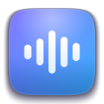
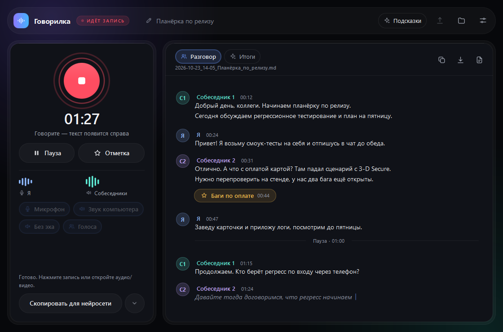
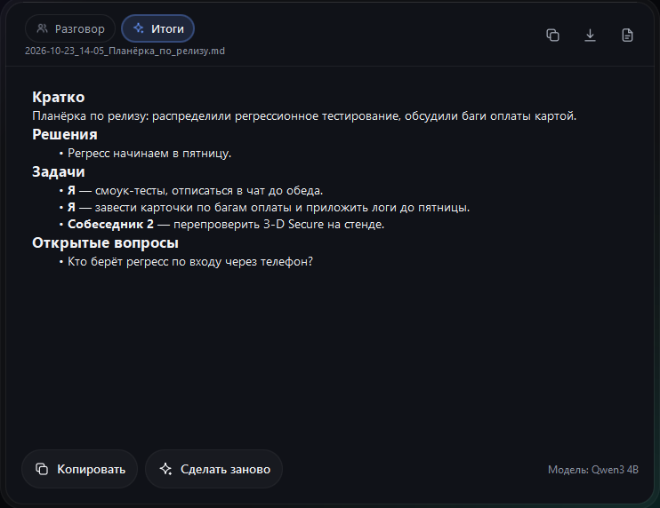

ГоворилкаГоворилка пишет ваш голос и собеседников, различает, кто что сказал, а после звонка выписывает решения и задачи. Всё считается на вашем компьютере: без облака, без бота в звонке и без подписки.
Открытый код, лицензия MIT. Около 170 МБ, модели распознавания (880 МБ) скачаются при первом запуске.

Zoom, Телемост, Teams, браузер — любая программа, которую вы слышите. Ваши реплики подписаны «Я», собеседники идут по номерам или по именам.
Модель GigaAM v3 от Сбера сама ставит точки и запятые. Ещё девять моделей в каталоге: лёгкие, телефонные, английские.
Звук и текст остаются на компьютере. Аккаунт не нужен, бот в звонок не приходит. Спокойно для переговоров с клиентами.
Кратко, решения, кто что делает и к какому сроку. Пишет языковая модель на вашем же компьютере.
Аудио и видео любой длины: mp3, m4a, wav, mp4, mkv, mov. Двухчасовая запись не съест память.
Зажали Ctrl + Alt, сказали, отпустили — текст появился там, где курсор: в Telegram, браузере, Word.

Одна кнопка, и программа выпишет главное: о чём договорились, кто что делает и какие вопросы остались. Итоги сохраняются в тот же файл, что и разговор.
Хотите итоги посильнее — отправьте разговор в ChatGPT, Claude или GigaChat в один клик, вместе с вашим запросом.
| Говорилка | Облачные сервисы встреч | Whisper-программы | |
|---|---|---|---|
| Цена | бесплатно | от 500 ₽ в месяц | бесплатно или разово |
| Где хранится запись | у вас | на их сервере | у вас |
| Бот в звонке | не нужен | часто нужен | не нужен |
| Вы и собеседник отдельно | да | да | обычно нет |
| Итоги и задачи | да | да | редко |
| Русский язык | GigaAM v3 | хорошо у российских | Whisper, слабее |
Проще всего одной командой: программа скачается с GitHub, сверит контрольную сумму и установится без предупреждений «неизвестный издатель».
Windows (PowerShell):
irm https://raw.githubusercontent.com/fedintsevqq/govorilka/main/install.ps1 | iex
Mac (Терминал):
curl -fsSL https://raw.githubusercontent.com/fedintsevqq/govorilka/main/install.sh | bash
Или скачайте файл кнопкой выше. Программа не подписана платным сертификатом, поэтому при первом запуске Windows покажет «Подробнее → Выполнить в любом случае», а Mac — «Системные настройки → Конфиденциальность и безопасность → Всё равно открыть». Дальше обновления ставятся кнопкой «Установить» внутри программы.
Говорилка пишет то, что слышит ваш компьютер. Предупреждайте собеседников, что ведёте запись, и соблюдайте закон вашей страны и правила компании: в части стран нужно согласие всех участников. Ответственность за запись лежит на том, кто её ведёт. Это не юридическая консультация.
С компьютера уходит только проверка обновлений раз в сутки (виден ваш IP) и загрузка моделей. Если вы сами включите режим «через нейросеть в интернете», текст получит выбранный вами сервис.